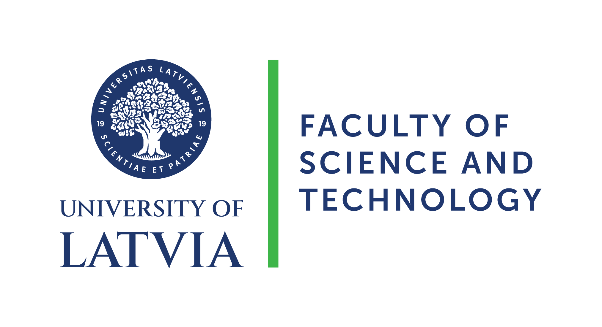

LearnQuantum
Explore the projects and initiatives of Abu(zer Yakaryılmaz) focused on Quantum Education and Outreach.
IYQST2025
We are celebrating IYQST2025 (2025 International Year of Quantum Science and Technology)!

My Photonic Ship
A free day-long quantum outreach workshop to learn "Quantum Superposition" through making games.
We, as University of Latvia & Latvian Quantum Initiative, are celebrating IYQST2025 with "My Photonic Ship" in several venues:
| (1) | Feb 08, 2025: | Üsküdar Amerikan Lisesi, İstanbul, Turkey |
| (2) | Feb 09, 2025: | Robert Kolej, İstanbul, Turkey |
| (3) | Feb 22, 2025: | İçel Anadolu Lisesi, Mersin, Turkey |
| (4) | Feb 24, 2025: | 75.Yıl Fen Lisesi, Mersin, Turkey |
This workshop and its content was designed by Abu (2024-2025)
About Abu
|  | Abu is a member of the University of Latvia. He is a researcher at the Center for Quantum Computing Science, and an associate professor at the Department of Computer Science. | |
| |
Abu has been working in the project Latvian Quantum Initiative since 2024. | |
| LinkedIn | Google Scholar | DBLP | Scopus | ||